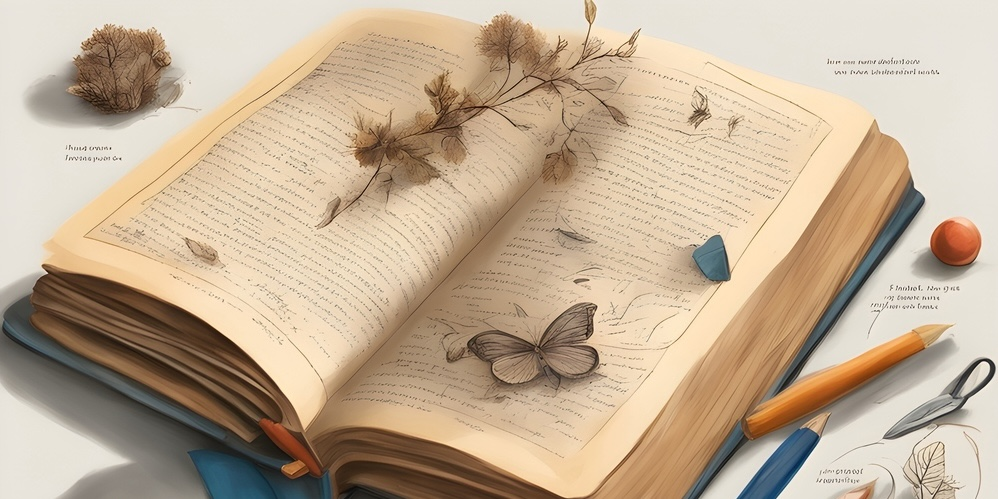

1er colloque du réseau METALEX
6 et 7 juin 2024
Neuville-sur-Oise, France
Lexicographie, Métalexicographie, nouveaux défis
Ce premier colloque international de l’association METALEX, inscrit dans le sillage de la rencontre internationale « Cinquante ans de métalexicographie » (Cergy, 24-25 octobre 2019), se propose d’explorer certains aspects peu traités dans la recherche sur les dictionnaires. Si les dictionnaires de langue ont fait depuis longtemps l’objet d’analyses métalexicographiques, les travaux portant sur les ressources terminologiques sont plus rares, alors même qu’elles jouent un rôle moteur dans le renouvellement de la lexicographie générale. De même, la métalexicographie des langues minorées mérite, du point de vue d’une recherche linguistique strictement scientifique, autant d’attention que celle qui est accordée aux langues dominantes. La métalexicographie doit inclure l’étude des représentations lexicographiques d’une langue générale standardisée dans ses multiples variations (régionales, temporelles, sociales, terminologiques, etc.).
Un autre champ de recherche concerne l’évolution des méthodes lexicographiques et de l’objet-dictionnaire liée à la dématérialisation informatique et aux transformations novatrices qu’elle entraîne. Parmi les défis que soulèvent ces aspects, on citera la mutation du travail lexicographique, les nouveaux usages ou encore le(s) statut(s) du dictionnaire. On s’intéressera également à la rétroconversion, qui permet le transfert des données d’un support papier à un support numérique. Ces changements nous invitent d’abord à nous interroger sur l’évolution des techniques et les nouvelles pra4ques de gestion et de partage de données, ainsi que sur la récupération de contenus enregistrés sur des supports obsolètes.
Si de tels bouleversements et contraintes technologiques ont impacté, du moins commercialement, le dictionnaire en tant qu’objet imprimé, il n’en reste pas moins un moyen de consultation privilégié pour certains publics. Il serait intéressant d’étudier les pratiques de consultation des dictionnaires par des publics variés ainsi que les représentations qu’ils en ont (avantages et inconvénients des différents types de dictionnaires). En mettant en regard les aspects techniques et culturels de la révolution lexicographique, il s’agira donc d’appréhender dans quelle mesure les usagers ont modifié leurs pratiques. Cela vaut aussi pour les dictionnaires bilingues qui se voient concurrencés par d’autres outils disponibles en ligne (Wordreference, Reverso, DeepL, etc.). Les diverses mutations technologiques et leurs implications culturelles nous donneront l’occasion de nous demander si le statut social du dictionnaire ne dépend pas désormais en partie de son support matériel. Enfin, les diverses propositions de travaux pourront servir à nourrir un débat plus large sur le statut du dictionnaire dans ses rapports avec la société.
Comité d'organisation
| Liset Diaz Martinez (EPHE) |
| Mariadomenica Lo Nostro (Université de Salerne – Italie) |
| Jean Pruvost (CY Cergy Paris Université) |
| Christophe Rey (CY Cergy Paris Université) |
| Philippe Reynés (Université de Picardie Jules Verne) |
Comité scientifique
| Jana Altmanova (Université de Naples L'Orientale – Italie) |
| Vincent Balnat (Université de Strasbourg) |
| Céleste Boccuzzi (Université de Bari Aldo Moro – Italie) |
| Rute Costa (Université NOVA de Lisbonne – Portugal) |
| Cosimo De Giovanni (Université de Cagliari – Italie) |
| Liset Diaz Martinez (EPHE) |
| Mireille Elchacar (Université Téluq – Québec) |
| Noé Gasparini |
| François Gaudin (CY Cergy Paris Université) |
| John Humbley (Université Paris Cité) |
| Christine Jacquet-Pfau (CY Cergy Paris Université) |
| Mariadomenica Lo Nostro (Université de Salerne – Italie) |
| Michela Murano (Université de Gênes – Italie) |
| Chiara Preite (Université de Modène et de Reggio d'Émilie – Italie) |
| Jean Pruvost (CY Cergy Paris Université) |
| Christophe Rey (CY Cergy Paris Université) |
| Philippe Reynès (Université de Picardie Jules Verne) |
| Micaela Rossi (Université catholique du Sacré-Coeur de Milan – Italie) |
| Carmen Saggiomo (Université de Campanie Luigi-Vanvitelli – Italie) |
| Ana Salgado (Université NOVA, Académie des sciences de Lisbonne – Portugal) |
Partenaires